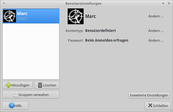
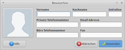

Benutzer und Gruppen Xubuntu
Dieser Artikel wurde für die folgenden Ubuntu-Versionen getestet:
Ubuntu 14.04 Trusty Tahr
Zum Verständnis dieses Artikels sind folgende Seiten hilfreich:
Die Desktop-Umgebung Xfce stellt kein zentrales Werkzeug für die Benutzerverwaltung zur Verfügung. Xubuntu nutzt dagegen die Benutzerverwaltung von GNOME. Hier werden nur die Benutzer bzw. Gruppen angezeigt, die normalerweise für die Verwaltung relevant sind. Es gibt noch weitere Benutzer und Gruppen auf dem System, doch diese sind nur in Sonderfällen wichtig. Eine vollständige Liste ist den Dateien /etc/passwd (Benutzer) und /etc/group (Gruppen) zu entnehmen.
Gestartet wird die Benutzerverwaltung aus dem  Anwendungsmenü über
Anwendungsmenü über
"System -> Benutzer und Gruppen" bzw.
"Einstellungen -> Benutzer und Gruppen".
|  |
| Benutzerverwaltung |
Benutzer¶
Beim Aufruf der Benutzerverwaltung erhält man folgende Informationen:
Benutzername und vollständiger Name des Benutzers
Kontentyp des Benutzers ("Administrator" oder "Desktop-Nutzer")
Passworteinstellungen
Über die Schaltfläche "Ändern..." können die hinterlegten Daten verändert werden.
| Registerkarten | |
| Menüpunkt | Beschreibung |
| "Hinzufügen" | Einen neuen Benutzer hinzufügen. Hier werden der Name, der Benutzername und ein Passwort benötigt. |
| "Erweiterte Einstellungen" | Zugangs- und Benutzereinstellungen verändern. |
| "Löschen" | Der gewählte Benutzer wird vom System gelöscht. Die Daten des Benutzers können behalten oder gelöscht werden. |
| "Gruppen verwalten" | Gruppeneinstellungen verändern und anpassen. |
Sonstiges¶
Benutzerbild ändern¶
|  |
| Benutzerinformationen |
Um das vor dem Benutzernamen befindliche Bild zu ändern, kopiert man beispielsweise eine Symboldatei aus /usr/share/pixmaps/ in das eigene Homeverzeichnis und benennt diese Datei in ~/.face um. Inwieweit das Bildformat eine Rolle spielt, ist nicht bekannt. Aber zumindest mit .png und .jpg-Dateien klappt es einwandfrei.
Alternativ kann man ab Xubuntu 14.04 das Programm Mugshot  verwenden, das im Einstellungsmanager unter "Persönliche Informationen" zu finden ist. Neben dem Benutzerbild können noch weitere Informationen hinterlegt werden, die sonst nur über den Befehl chfn anpassbar sind.
verwenden, das im Einstellungsmanager unter "Persönliche Informationen" zu finden ist. Neben dem Benutzerbild können noch weitere Informationen hinterlegt werden, die sonst nur über den Befehl chfn anpassbar sind.
 Übersichtsartikel
Übersichtsartikel- Erstellt mit Inyoka
-
 2004 – 2017 ubuntuusers.de • Einige Rechte vorbehalten
2004 – 2017 ubuntuusers.de • Einige Rechte vorbehalten
Lizenz • Kontakt • Datenschutz • Impressum • Serverstatus -
Serverhousing gespendet von